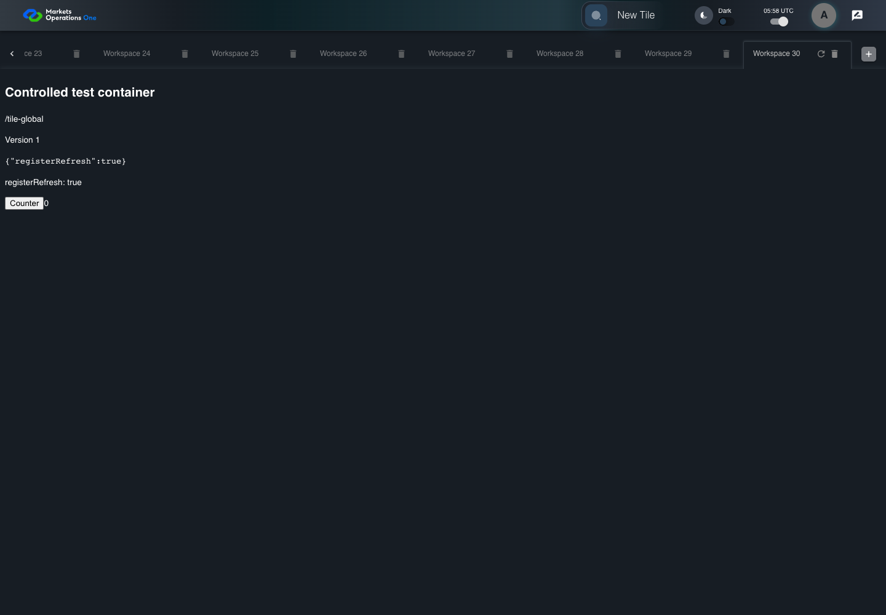
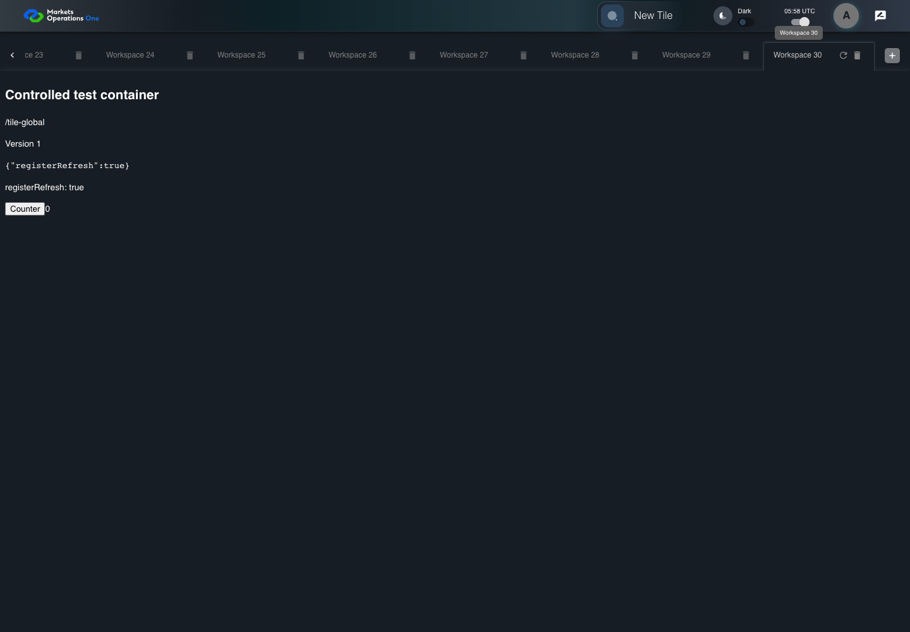

UX-036 thirty workspace tabs remain operable
PASS · application/run-050/ux-036-thirty-workspace-tabs-remain-operable-b79e4908ea94-attempt-1 · ACTUAL_APPLICATION_LOCAL_SERVICES
Actual React shell, Category grid, and response handler. Controlled browser identity and service responses. Cross-tab rejection does not establish BFF global revocation. Spreadsheet formula execution requires a separate viewer.
2026-10-22T05:58:40.397Z to 2026-10-22T05:58:43.460Z
Assertions and result · Artifact manifest · Exact run inputs and source hashes
Result SHA-256:a245970037f19b1066ce873758c541365bb5b9a612ba007801dce458aead7ae6Screenshot capture: CAPTURED. Named frames: 6.
Step screenshot evidence: COMPLETE. 5/5 canonical steps have execution screenshots.
Canonical step timeline
Given USER-A has 30 fixture workspaces labelled Workspace 1 through Workspace 30
Execution: PASSED.1. step-01 Visible state after step 1: Given USER-A has 30 fixture workspaces labelled Workspace 1 through Workspace 30
2026-10-22T05:58:42.220Z · 1440×1000
Step: /Users/lushevol/code/github/ratan-release-impact/workbench/tasks/ui-test-coverage-20261022/test-cases.md:13413
SHA-256:6be4a3712f89c0b0323c6bdb4689b58b9f24e710394632d4e9f06c845f737f30When USER-A selects the tab labelled "Workspace 30" in the tablist named "workspaces" on the Home page
Execution: PASSED.2. step-02 Visible state after step 2: When USER-A selects the tab labelled "Workspace 30" in the tablist named "workspaces" on the Home page
2026-10-22T05:58:42.479Z · 1440×1000
Step: /Users/lushevol/code/github/ratan-release-impact/workbench/tasks/ui-test-coverage-20261022/test-cases.md:13414
SHA-256:26c68721dafa7078de5627d1cf31d3b65357e134f07357060f1039d0eb678b52Then The tab labelled "Workspace 30" in the tablist named "workspaces" on the Home page is selected and reachable through the tab strip scroll area
Execution: PASSED.3. step-03 Visible state after step 3: Then The tab labelled "Workspace 30" in the tablist named "workspaces" on the Home page is selected and reachable through the tab strip scroll area
2026-10-22T05:58:42.538Z · 1440×1000
Step: /Users/lushevol/code/github/ratan-release-impact/workbench/tasks/ui-test-coverage-20261022/test-cases.md:13415
SHA-256:6b83ef9bb579ee3202c53d19433957e89ac2daf9ac03558bfbcf879109a3ffa9And The icon button labelled "refresh" in the tab labelled "Workspace 30" on the Home page is visible and enabled
Execution: PASSED.
4. step-04 Visible state after step 4: And The icon button labelled "refresh" in the tab labelled "Workspace 30" on the Home page is visible and enabled
2026-10-22T05:58:43.071Z · 1440×1000
Step: /Users/lushevol/code/github/ratan-release-impact/workbench/tasks/ui-test-coverage-20261022/test-cases.md:13416
SHA-256:4940a1801a20915878dde3bc94fdd38eb5eca22ece8acd206fb2749664823822And The icon button labelled "delete" in the tab labelled "Workspace 30" on the Home page is visible and enabled
Execution: PASSED.
5. step-05 Visible state after step 5: And The icon button labelled "delete" in the tab labelled "Workspace 30" on the Home page is visible and enabled
2026-10-22T05:58:43.169Z · 1440×1000
Step: /Users/lushevol/code/github/ratan-release-impact/workbench/tasks/ui-test-coverage-20261022/test-cases.md:13417
SHA-256:3f75e118d381afc935063b6955bc8576b92a7b436757d941e34f13ea24425be6
Additional named frames

The final visible state after the named test assertions.
2026-10-22T05:58:43.236Z · 1440×1000Step: Test source: /Users/lushevol/code/github/ratan-release-impact/workbench/e2e/audit-specs/additional-boundaries.spec.ts:12
SHA-256:
3f75e118d381afc935063b6955bc8576b92a7b436757d941e34f13ea24425be6Screenshots establish visible state only. Assertions and traces support functional claims.